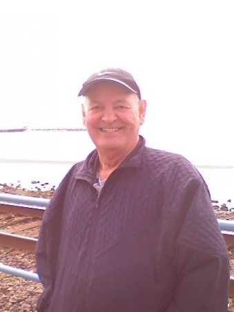

I can't say that I started watching Supernatural from when it first aired in 2005. I was introduced to it by a friend that was watching it on tv one day. She was somewhere in season 5 or 6, she said. I watched a bit of the episode and asked her what she was watching. She told me and that she had a few seasons on DVD and that she loved the show. How she described it was, "These cute guys travel around hunting monsters." I hadn't even heard of Supernatural before, but I liked the little bit that I saw. I borrowed the first couple of seasons to watch and loved it too. I ended up watching all the DVDs that she had in a few weeks.
I have always liked watching horror movies, almost anything with spooky monsters in it, and the "cute guys" comment made it worthwhile for me to check out. I grew up watching scary movies with my older sister. I would spend the night, and we would go to the video store to rent a ton of scary movies since I wasn't allowed to watch them at home.

When I started watching the show, I was in a pretty dark place in my life. I had just lost my Dad to cancer. Supernatural gave me something to disappear into. I started looking up the show online and found the main characters, Jensen Ackles and Jared Padalecki, to be so hilarious in real life. I watched some of their interviews and Comic-Con videos.
In one video, they started talking about a campaign they were involved with that really caught my attention called Always Keep Fighting It's a T-shirt campaign that brings awareness about depression, addiction, and suicidal thoughts. Jared talked about his struggle with depression and that there's no shame in having to fight every day to be ok. "This isn't easy; it is a fight, but I'm going to keep fighting." - Jared Padalecki
Throughout the years, my struggle with depression has come in waves. When I'm feeling really down, I look up those YouTube videos to lift my spirits up again. There are always new things to see and laugh at or get inspiration from. My battle is every day. I have to force myself to get the basics done, but somedays I just can't do it, and that's ok. There is always tomorrow. I have to ALWAYS KEEP FIGHTING.